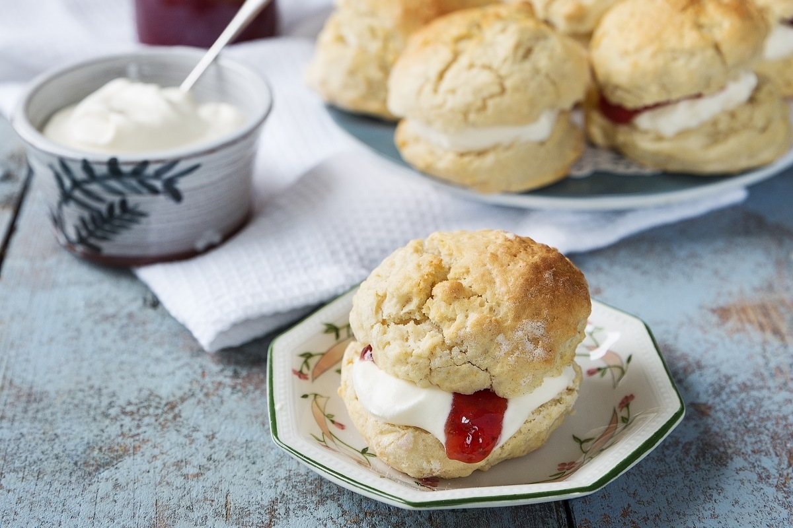
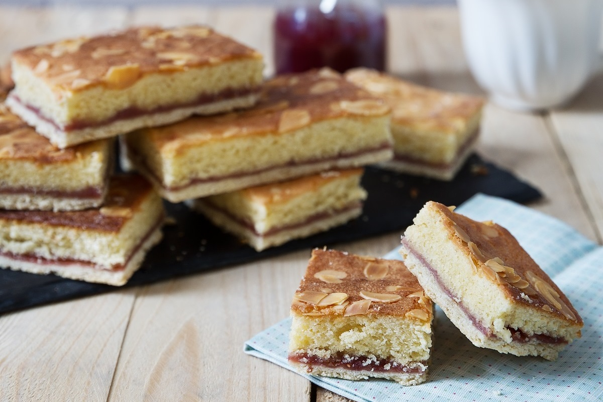
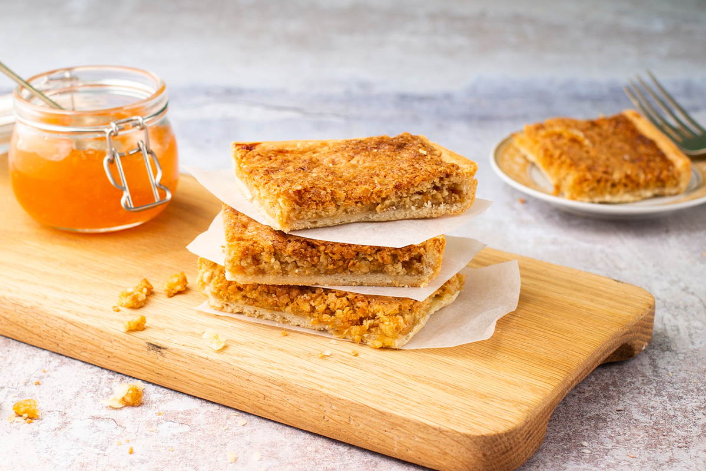

Weekly Recipes

3-Ingredient Scones
How to:
- Preheat oven to 210°C/420°F/Gas 7. Lightly dust baking tray with flour.
- Sieve flour into a large mixing bowl. Add the cream. With a knife, bring the ingredients together while gradually adding the lemonade.
- Turn the dough onto a lightly floured surface and gently press to ½ inch in thickness. Cut scones using a scone cutter or tumbler. Repeat until all dough is used.
- Place on baking tray and bake for 10-12 mins in preheated oven until golden brown.
- Cool on wire tray before serving with jam and freshly whipped cream.
What you need:
- 450g/1lb Odlums Self Raising Flour
- 250ml Lemonade
- 250ml Fresh Cream (pouring)

Almond Bakewell Slices
How to:
- Preheat oven to 190°C/375°F/Gas 5. Lightly grease an 11 x 7"/ 28x 18cm Swiss Roll tin.
- Sieve the flour and salt into a bowl. Rub in the butter/margarine and add sufficient water to make a soft dough.
- Turn onto a lightly floured board, roll out and line the Swiss Roll tin. Cover and leave in the fridge while making the topping.
- Make the topping by melting the butter/margarine in a pan over a low heat.
- Remove from the heat and add the sugar, ground almonds and flour.
- Mix well, then beat in the eggs and almond essence. Leave to cool a little.
- Remove pastry from the fridge, spread the jam over the top of the pastry base.
- Pour the topping over the jam.
- Decorate with flaked almonds and bake for 35-40 mins until pale golden in colour.
- When cool, cut into slices.
What you need:
- 175g/6oz Odlums Cream Plain Flour
- Pinch of Salt
- 75g/3oz Butter or Margarine
- Cold Water

Almond Oaty Slices
How to:
- Prepare the pastry by sifting the flour and salt into a bowl. As always, have everything cold.
- Rub in the margarine until mixture resembles breadcrumbs.
- For the topping, melt the margarine in a saucepan.
- Remove from the heat and stir in the sugar, egg and almond essence.
- Add the oatmeal and mix well.
What you need:
- 125g/4oz Odlums Cream Plain Flour
- 50g/2oz Butter or Margarine
- Pinch of Salt and Cold Water